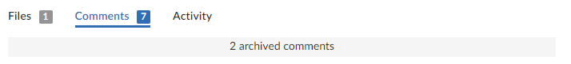

Comments
Comments are the primary feedback mechanism provided by Swarm. Review comments can be flagged as tasks for a lightweight workflow within a review that helps authors and reviewers prioritize review feedback, see Tasks for details. By default, comment notifications are delayed to allow you to add or edit comments as you progress through a review without sending a notification for each individual comment on the review. Comment notifications are rolled up into a single notification that you can either leave to be sent automatically, or you can send manually, see Comment notification delay.
You can also like comments, add links, add attachments, and add Emojis, see Comment features for details.
-
Markdown content is displayed in review comments, but Markdown support is limited to prevent execution of raw HTML and JavaScript content. For information about Markdown, see Markdown in comments and review descriptions
-
If you use Markdown styles in your review comment, Swarm renders them when you post the comment.
You can add comments to:
- A changelist, review, or job
- A review description
- A changelist description
- A line of a text file in a changelist, or review
- A file in a changelist, or review
Access comments for a changelist, review, or job, by clicking the Comments tab. The number of open (non-archived comments) is displayed in the tab. Hover your mouse pointer over the comment count, the tooltip shows how many comments are archived. See Archiving comments for details.
Adding comments
This section describes how to add comments.
Related comment features:
You can use Links in descriptions and comments in comments. An @mention includes the specified user in the review, and they will receive a notification whenever there is an update to the review.
Commenting on a changelist, review or job
- From the changelist, review, or job page: click Comments to view the Comments tab.
- Add your comment in the text area.
- Click Post.
Commenting on a review description
- From the changelist or review page description area: click Comments (n) (where n is the number of comments that already exist).
- Click Add a comment.
- Add your comment in the text area.
- Click Post.
To hide the description comments, click Comments n (where n is the number of description comments that exist). To display the comments again, click Comments n.
Commenting on a changelist description
- From the changelist or review page description area: click Add a Comment or n Comments (where n is the number of comments that already exist).
- Add your comment in the text area.
- Click Post.
-
Tip
To hide the description comments, click n Comments (where n is the number of description comments that exist). To display the comments again, click n Comments.
Commenting on a specific line in a file in a changelist or review
- From the changelist or review page: click Files to view the Files tab.
- Click on the line you want to comment on.
- Add your comment in the text area.
- Optional (Review page only): Select the Flag as Task checkbox to mark the comment as a task that needs to be addressed.
- Click Post.
Commenting on a file in a changelist or review
- From the changelist or review page: click Files to view the Files tab.
- If there are multiple files, click the file you want to comment on to expand its view.
- Click the Add a comment link in the footer of the file display.
- Add your comment in the text area.
- Optional (Review page only): Select the Flag as Task checkbox to mark the comment as a task that needs to be addressed.
- Click Post.
Editing comments
This section describes how to edit comments.
Related comment features:
- You can only edit comments that you have created.
- If a comment is edited, all of the likes for that comment are removed.
-
Click the comment Edit comment
 link.
link. -
Edit the comment text.
-
Add new attachments or remove existing attachments.
TipOnly available in the original Swarm review page UI. To use this feature, click the Preview switch at the top of the review page to switch to the original review page UI and follow the instructions below.
This feature will be added to the new UI in a later Swarm release.
When you remove an attachment, the attachment is marked for removal, the green bar for the attachment is muted, and the X button is replaced with a Restore button
 .
. Click the Restore button
to the right of the attachment to keep the attachment on the comment. Attachments cannot be restored after the comment edit has been saved. In this case you must edit the comment again and add the attachment to it. -
Click Save to save the edited comment.
Swarm sends a notification to everyone involved in the review, including the review author and the reviewers, but not the editor of the comment.
The comment timestamp is marked as (edited) to show that the comment has been changed (only supported in the original Swarm review page).
Swarm does not provide a mechanism to see older versions of edited comments.
Tasks
Flagging review comments as tasks is a lightweight workflow within a review that helps authors and reviewers prioritize review feedback. Any comment on a code review can be flagged as a task, indicating to the code review's author that the described issue needs to be addressed, and that the review is unlikely to be approved without a fix.
Changelist and Job comments cannot be flagged as tasks.
Flag a comment as a task
To flag a comment as a task, select the Flag as Task checkbox when posting a comment, or click the Comment actions  button in the upper right of an existing comment and select Flag as Open task in the drop-down menu.
button in the upper right of an existing comment and select Flag as Open task in the drop-down menu.
If you do not have permission to archive comments, you do not have permission to flag comments as tasks. Anonymous users never have permission to archive comments, and can only view current task states.
Set a task to Task addressed or Not a task
Once a comment is flagged as a task, it is considered to be an open task. Click the Red flag button to display a drop-down menu with the following options:
- Task addressed: usually used by the author of the review to indicate that the issue has been fixed.
- Remove task: used to correct comments that have been flagged as tasks by mistake.
Verify a task, verify and archive a task, or reopen a task
A comment with a green check indicates that the task has been addressed. Click the Green check mark button to display a drop-down menu with the following options:
- Verify task: usually used by the author of the comment, or another reviewer, after confirming that the issue is fixed.
- Verify and Archive (only supported in the original Swarm review page): used to both indicate that the issue has been fixed, and to archive the comment so that it is hidden from view. Archived tasks, whether they are open, addressed, or verified, are not included in the task counts for the code review.
- Reopen task: used if the issue needs further work after it has been marked as addressed.
Reopen a task
A comment with a blue double-check indicates that the task has been verified. Click the Blue double-check mark button to display a drop-down menu with the following option:
- Reopen task: used if the issue needs further work post-verification, or if verification was made by mistake.
Task details
A summary of the number and status of comments flagged as tasks is displayed in the Information panel to the right of the review.
Archived comments that are flagged as tasks are not included in the summary or the Tasks dialog.

- Red Flag: Displays the number of open tasks on the review.
- Green check mark: Displays the number of addressed tasks on the review.
- Blue double-check mark: Displays the number of addressed and verified tasks on the review.
Show Task details  : Click to display a dialog listing all of the tasks associated with the review:
: Click to display a dialog listing all of the tasks associated with the review:

Within the Tasks dialog, you can filter the tasks by the Reporter (the userid of the user who created the task), and/or by task state using the buttons at the top of the dialog:
- Click the Red flag button to display only open tasks (comments that need to be addressed).
- Click the Green check mark button to display only addressed tasks (comments that have been addressed).
- Click the Blue double-check mark button to display only verified tasks (comments that have been addressed and verified).
To change the state of a task from the Tasks dialog, click the task state dropdown for the task and select the new task state.
To view the full comment text for a task, click the ellipses to the right of the task.
Approve a review with open tasks
Flagging a comment as a task provides a visual indication that there is an identified issue that needs to be addressed before the review can be approved, see Set a task to Task addressed or Not a task.
If Swarm is configured to prevent approval of reviews with open tasks and a review has open tasks, the Approved, and Approve and commit options will not be available for the review. This option is configured by an administrator, see Disable approve for reviews with open tasks.
To approve, or approve and commit a review with open tasks, you must address the tasks first and then set them to Task Addressed, or Not a Task, see Set a task to Task addressed or Not a task for details.
If you select Approved or, Approve and Commit a review that has open tasks with Swarm, a warning message is displayed in the Update Review dialog. The warning is only advisory, either click Cancel and address the open tasks or click Approve to approve the review. Archived open tasks will not trigger the warning message.

Comment features
Comment notification delay
By default, comment notifications are delayed to allow reviewers to add or edit comments as they progress through a review without sending a notification for each individual comment on the review. Comment notifications are rolled up into a single notification and sent either manually by the reviewer, or automatically after the notification delay time has been exceeded.
The delay countdown is reset each time the reviewer adds or edits a comment on the review, by default the notification delay time is set to 30 minutes.
- If you are commenting on more than one review, each of the reviews that you are commenting on has its own notification delay countdown that only applies to the comments that you make on that review.
- If another reviewer is making comments on the same review as you, that reviewer has their own notification delay timer for that review.
- If you manually send a delayed comment notification, the notification will only contain the comments that you made on that review.
The comment notification delay does not delay the posting of the comments, only the comment notification is delayed.
Comment notifications are only delayed for comments on reviews. Comments on commits or jobs produce notifications immediately.
The notification delay time is a global configuration setting configured by the Swarm administrator, see Comment notification delay.
Manually send the comment notification immediately:
Only available in the original Swarm review page UI. To use this feature, click the Preview switch at the top of the review page to switch to the original review page UI and follow the instructions below.
This feature will be added to the new UI in a later Swarm release.
- Add or edit your comment as normal.
- Click the Post and notify (n) button to the right of the comment box.
Where (n) is the number of delayed comment notifications in the queue waiting to be sent, this number does not include the current comment you are working on. - If you forget to click the Post and notify (n) button, click the Send all notifications (n) button below the review description to send all of the notification for the review immediately.
- Only the comments that you have made on this review are rolled up into the notification that is sent when you click Post and notify (n) or Send all notifications (n).
Reply to comments
By default, you can reply to comments, replies are displayed in a thread below the parent comment. Comment thread depth is set to 4 by default, this means you can have up to 4 levels of replies for a parent comment. The Reply link is not displayed for replies at or above the maximum thread depth set for Swarm. If the parent comment is archived, replies are archived with the parent, see Archiving comments.
Comment replies can be disabled, and the thread depth can be increased or reduced by a Swarm administrator, see Comment threading.
If the thread depth is reduced by a Swarm administrator, earlier replies at a deeper level will continue to be displayed but you cannot reply to them.
To reply to a comment:
- Click Reply
 below the comment you are replying to.
below the comment you are replying to. - Add your comment in the text area.
- Click Post.

Emoji
Swarm comments support Emoji shorthand. So when you save a comment, emoticon text like :smile: is displayed as:
Emoji emoticons are listed in the Emoji Cheat Sheet.
Links in comments
Whenever you include a URL in a comment, it is automatically made into a link.
If the link points to an image, or a YouTube video, that resource is displayed at the end of the comment. For information about linking images and videos, see Common text styles.
Comment attachments
Only available in the original Swarm review page UI. To use this feature, click the Preview switch at the top of the review page to switch to the original review page UI and follow the instructions below.
This feature will be added to the new UI in a later Swarm release.
Arbitrary files can be attached to comments. This is useful for sharing documents that are helpful in code reviews, such as screenshots of error conditions, reference code, etc.
Swarm must be configured to enable comment attachments. Once the configuration is complete, the comment area will include the following text Drop files here to attach them.
To attach a file to an open comment:
- Drag the file from your file browser and drop it on the comment area.
- The upload to Swarm starts immediately and progress is displayed below the comment.
- Blue Progress Bar: the upload to Swarm is in progress.
- Green File Bar: upload complete.
- If you attach a file to the comment by mistake, you can remove it by clicking the X button on the Green File Bar.
- Click Post.
Multiple files can be attached to a comment, either one at a time, or by dragging a group of files. Folders cannot be attached to comments.
The filename and file size is displayed in the comment for each attached file, click on the filename to view the file.
When comments are viewed in the Comments tab, image previews are displayed for the attached images.
Image previews are only displayed in the Comments tab, they are not displayed when a comment is viewed in the Files tab.
Liking comments
Only available in the original Swarm review page UI. To use this feature, click the Preview switch at the top of the review page to switch to the original review page UI and follow the instructions below.
This feature will be added to the new UI in a later Swarm release.
As an authenticated user, you can like a comment by clicking the muted heart icon beneath the comment  .
.
When you like a comment, a notification is sent to the author of the comment , and the heart icon changes to red to indicate that you have liked the comment  . The number of likes the comment has is displayed next to the heart icon. If a comment is edited, all of the likes for that comment are removed.
. The number of likes the comment has is displayed next to the heart icon. If a comment is edited, all of the likes for that comment are removed.
Hover your mouse pointer over the number of likes to display the usernames of everyone that has liked the comment:
Click the heart icon again to unlike a comment.
You cannot like/unlike a comment that has been archived.
Comment context
When comments are added to files in a review, on lines that have been changed, Swarm records several lines of context before the line receiving the comment. This helps makes sense of the comments should later changes remove those lines.
Each comment associated with that line has a record of the context, but only the first comment displays that context.
Mark comments as read
When you mark a comment as read, the comment is rolled up into a single line to save space and make it easier for you to find comments you have not read. The read flag is remembered independently for each user.
Mark a single comment as read:
- Click the Comment actions button for the comment.
- Select Mark comment as read from the dropdown menu.
- The comment is rolled up into a single line to save space.
Marking a parent comment as read will not mark the child comments as read.
Mark all of the comments on a review as read:
Only available in the original Swarm review page UI. To use this feature, click the Preview switch at the top of the review page to switch to the original review page UI and follow the instructions below.
This feature will be added to the new UI in a later Swarm release.
- Click the Mark all comments read button in the review heading.
- All of the comments in the review are rolled up into single lines to save space.
Mark all comments read will mark all the comments as read including the description comments.
Mark comments as unread
Marking a comment as unread expands the comment so that you can view the comment content. If a comment is marked as read and the comment changes, Swarm will automatically clear the read flag so that you can see that the comment has changed. Changes that automatically mark a comment as unread are:
- Comment text is edited
- Comment attachments are added or removed
- Comment is marked as a task
- Task is reopened
- Comment or task is unarchived
Mark a single comment as unread:
- Click the button to the right of the comment.
- The comment content is expanded.
Marking a parent comment as unread will not mark the child comments as unread.
Mark all of the comments on a review as unread:
Only available in the original Swarm review page UI. To use this feature, click the Preview switch at the top of the review page to switch to the original review page UI and follow the instructions below.
This feature will be added to the new UI in a later Swarm release.
- Click the Mark all comments unread button in the review heading.
- The content of all of the comments in the review are expanded.
Mark all comments unread will expand the content of all the comments including the description comments.
Archiving comments
When you archive a comment, it is archived for all of the Swarm users.
As a code review progresses, comments made on earlier versions of a file might become less useful. Archiving these comments tidies up the comment view and makes it easier to find the more important comments.
The Archive option is only available for top level comments, if a comment has replies they are archived with the parent comment.
To archive a comment:
-
Click the Comment actions button at the top right of the comment you want to archive.
-
Select Archive from the dropdown menu.
Archived comments are hidden from view, the number of archived comments that exist for the review is displayed in the archived comments button at the top of the Comments tab.

To display and hide archived comments:
Click on the archived comments button to toggle the archive comment display on and off.
Restoring comments
When you restore a comment, it is restored for all of the Swarm users.
Archived comments can be restored. If archived comments have replies, the replies are also restored.
To restore an archived comment:
- Click the archived comments button at the top of the Comments tab to display all of the archived comments.
- Find the comment you want to restore.
- Click the Restore button
 in the top right of the comment to restore it.
in the top right of the comment to restore it.